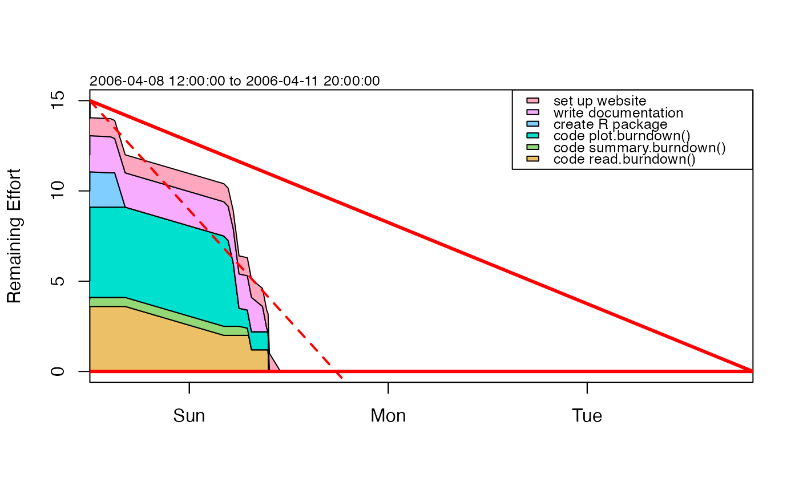

Create a burndown object from the given data.
as.burndown(start, deadline, tasks, progress, progressInPercent = FALSE)Start date
Deadline (end date)
Data frame containing the task IDs (may be alphanumeric), their description and effort
Data frame containing the progress values with task ID, timestamp and work done (either in percentage or absolute)
boolean; if set to FALSE, progress values are treated like absolute values and
converted to percentages
A burndown object.
Creates a burndown object from the given data; progress may be given in percentage or absolute values.
Other things related to burndown data:
burndown-class,
burndown,
plot,burndown-method,
read.burndown(),
summary,burndown-method
library(plan)
# same data as in tests/burndown.dat
start <- as.POSIXct(strptime("2006-04-08 12:00:00", "%Y-%m-%d %H:%M:%S"))
deadline <- as.POSIXct(strptime("2006-04-11 20:00:00", "%Y-%m-%d %H:%M:%S"))
tasks <- data.frame(key = c(1, 2, 3, 4, 5, 6),
description = c("code read.burndown()", "code summary.burndown()",
"code plot.burndown()", "create R package",
"write documentation", "set up website"),
effort = c(4, 1, 5, 2, 2, 1),
stringsAsFactors = FALSE)
progress <- data.frame(key = c(1, 2, 1, 2, 4, 5, 4, 1, 3, 3, 3, 2, 2, 1, 5, 5, 5, 1, 3, 6),
progress = c(5, 5, 10, 50, 5, 5, 100, 50, 5, 30, 80, 60,
100, 70, 30, 90, 100, 100, 100, 100),
time = structure(c(1144494000, 1144495800, 1144497600, 1144501200,
1144517400, 1144519200, 1144523760, 1144566600,
1144568460, 1144570680, 1144573200, 1144576800,
1144577400, 1144578600, 1144583400, 1144585200,
1144585800, 1144586100, 1144586400, 1144591200),
class = "POSIXct"),
stringsAsFactors = FALSE
)
b <- as.burndown(start, deadline, tasks, progress, progressInPercent = TRUE)
summary(b)
#> Start, 2006-04-08 12:00:00
#> Deadline, 2006-04-11 20:00:00
#> Key, Description, Effort
#> 1, code read.burndown(), 4
#> 2, code summary.burndown(), 1
#> 3, code plot.burndown(), 5
#> 4, create R package, 2
#> 5, write documentation, 2
#> 6, set up website, 1
#> Key, Done, Time
#> 1, 5, 2006-04-08 08:00:00
#> 2, 5, 2006-04-08 08:30:00
#> 1, 10, 2006-04-08 09:00:00
#> 2, 50, 2006-04-08 10:00:00
#> 4, 5, 2006-04-08 14:30:00
#> 5, 5, 2006-04-08 15:00:00
#> 4, 100, 2006-04-08 16:16:00
#> 1, 50, 2006-04-09 04:10:00
#> 3, 5, 2006-04-09 04:41:00
#> 3, 30, 2006-04-09 05:18:00
#> 3, 80, 2006-04-09 06:00:00
#> 2, 60, 2006-04-09 07:00:00
#> 2, 100, 2006-04-09 07:10:00
#> 1, 70, 2006-04-09 07:30:00
#> 5, 30, 2006-04-09 08:50:00
#> 5, 90, 2006-04-09 09:20:00
#> 5, 100, 2006-04-09 09:30:00
#> 1, 100, 2006-04-09 09:35:00
#> 3, 100, 2006-04-09 09:40:00
#> 6, 100, 2006-04-09 11:00:00
plot(b)
